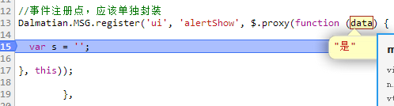
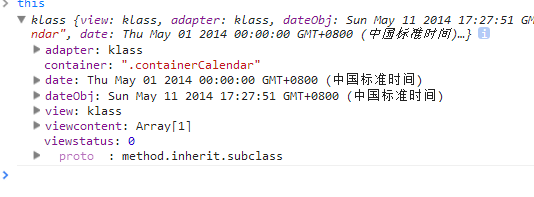
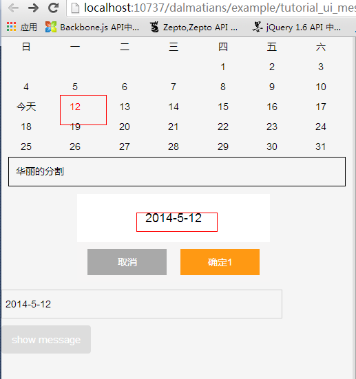
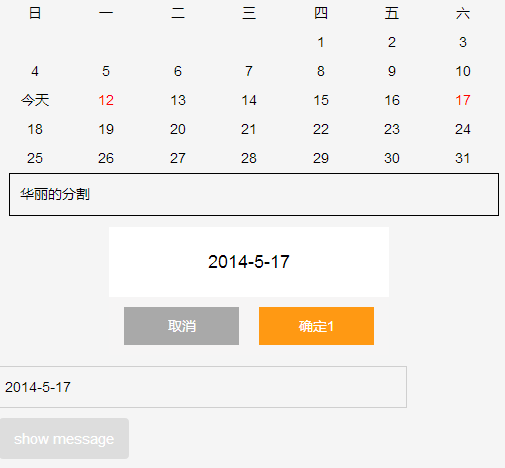

前言
在单页应用中，view与view之间的通信机制一直是一个重点，因为单页应用的所有操作以及状态管理全部发生在一个页面上
没有很好的组织的话很容易就乱了，就算表面上看起来没有问题，事实上会有各种隐忧，各种坑等着你去跳
最初就没有一定理论上的支撑，极有可能是这么一种情况：
① 需求下来了，搞一个demo做交待
② 发现基本满足很满意，于是直接在demo中做调整
上面的做法本身没有什么问题，问题发生在后期
③ 在demo调整后应用到了实际业务中，发现很多地方有问题，于是见一个坑解决一个坑
④ 到最后感觉整个框架零零散散，有很多if代码，有很多代码不太懂意思，但是一旦移除就报错
这个时候我们就想到了重构，重构过程中就会发现最初的设计，或者说整个框架的基础有问题，于是就提出推翻重来
若是时间上允许，还可以，但是往往重构过程中，会多一些不按套路出牌的同学，将API接口给换了，这一换所有的业务系统全部崩溃
所以说，新的框架会对业务线造成压力，会提高测试与编码成本，于是就回到了我们上篇博客的问题
一些同学认为，以这种方式写UI组件过于麻烦，但是我们实际的场景是这样的
我们所有的UI 组件可能会由一个UIAbstractView继承而来，这样的继承的好处是：
① 我们每个UI组件都会遵循一个事件的流程做编写，比如：
onCreate->preShow->show->afterShow->onHide->destroy （简单说明即可）
于是我们想在每一个组件显示前做一点操作的话，我们可以统一写到AbstractView中去（事实上我们应该写到businessView中）
② 在AbstractView中我们可以维护一个共用的闭包环境，这个闭包环境被各个UI组件共享，于是UI与UI之间的通信就变成了实例的操作而不是dom操作
当然，事实上通过DOM的操作，选择器，id的什么方式可能一样可以实现相同的功能，但是正如上面所言，这种方式会有隐忧
事实上是对UI组件编写的一种约束，没有约束的组件做起来当然简单
但是有了约束的组件的状态处理才能被统一化，因为
单页应用的内存清理、状态管理才是真正的难点
PS：此文仅代表个人浅薄想法，有问题请指出
消息通信机制
其实所谓消息通信，不过是一种发布订阅的关系，又名观察者；观察者有着一对多的关系
多个对象观察同一个主体对象，若是主体对象发生变化便会通知所有观察者变化，事实上观察者本身又可以变成主体对象，所以多对多的关系偶尔不可避免
还有一些时候观察者也可能变成自己，自己的某些状态会被观察
其实前面扯那么多有的没的不如来一个代码，在Backbone中有一段代码简单实现了这个逻辑
1 var Events = Backbone.Events = { 2 on: function (name, callback, context) { 3 if (!eventsApi(this, 'on', name, [callback, context]) || !callback) return this; 4 this._events || (this._events = {}); 5 var events = this._events[name] || (this._events[name] = []); 6 events.push({ callback: callback, context: context, ctx: context || this }); 7 return this; 8 }, 9 10 off: function (name, callback, context) { 11 var retain, ev, events, names, i, l, j, k; 12 if (!this._events || !eventsApi(this, 'off', name, [callback, context])) return this; 13 if (!name && !callback && !context) { 14 this._events = {}; 15 return this; 16 } 17 18 names = name ? [name] : _.keys(this._events); 19 for (i = 0, l = names.length; i < l; i++) { 20 name = names[i]; 21 if (events = this._events[name]) { 22 this._events[name] = retain = []; 23 if (callback || context) { 24 for (j = 0, k = events.length; j < k; j++) { 25 ev = events[j]; 26 if ((callback && callback !== ev.callback && callback !== ev.callback._callback) || 27 (context && context !== ev.context)) { 28 retain.push(ev); 29 } 30 } 31 } 32 if (!retain.length) delete this._events[name]; 33 } 34 } 35 36 return this; 37 }, 38 39 trigger: function (name) { 40 if (!this._events) return this; 41 var args = slice.call(arguments, 1); 42 if (!eventsApi(this, 'trigger', name, args)) return this; 43 var events = this._events[name]; 44 var allEvents = this._events.all; 45 if (events) triggerEvents(events, args); 46 if (allEvents) triggerEvents(allEvents, arguments); 47 return this; 48 }, 49 };
这是一段简单的逻辑，也许他的主干还不全，我们这里若是做一个简单的实现的话就会变成这个样子：
1 var Events = {}; 2 Events.__events__ = {}; 3 4 Events.addEvent = function (type, handler) { 5 if (!type || !handler) { 6 throw "addEvent Parameter is not complete!"; 7 } 8 var handlers = Events.__events__[type] || []; 9 handlers.push(handler); 10 Events.__events__[type] = handlers; 11 }; 12 13 Events.removeEvent = function (type, handler) { 14 if (!type) { 15 throw "removeEvent parameters must be at least specify the type!"; 16 } 17 var handlers = Events.__events__[type], index; 18 if (!handlers) return; 19 if (handler) { 20 for (var i = Math.max(handlers.length - 1, 0); i >= 0; i--) { 21 if (handlers[i] === handler) handlers.splice(i, 1); 22 } 23 } else { 24 delete handlers[type]; 25 } 26 }; 27 28 Events.trigger = function (type, args, scope) { 29 var handlers = Events.__events__[type]; 30 if (handlers) for (var i = 0, len = handlers.length; i < len; i++) { 31 typeof handlers[i] === 'function' && handlers[i].apply(scope || this, args); 32 } 33 };
整个程序逻辑如下：
① 创建一个events对象作为消息存放点
② 使用on放events中存放一个个事件句柄
③ 在满足一定条件的情况下，触发相关的事件集合
IScroll中的消息机制
简单而言，以IScroll为例，他在构造函数中定义了默认的属性：
this._events = {};
然后提供了最简单的注册、触发接口
1 on: function (type, fn) { 2 if (!this._events[type]) { 3 this._events[type] = []; 4 } 5 6 this._events[type].push(fn); 7 }, 8 9 _execEvent: function (type) { 10 if (!this._events[type]) { 11 return; 12 } 13 14 var i = 0, 15 l = this._events[type].length; 16 17 if (!l) { 18 return; 19 } 20 21 for (; i < l; i++) { 22 this._events[type][i].call(this); 23 } 24 },
因为IScroll中涉及到了自身与滚动条之间的通信，所以是个很好的例子，我们看看IScroll的使用：
他对自身展开了监听，若是发生以下事件便会触发响应方法
1 _initIndicator: function () { 2 //滚动条 3 var el = createDefaultScrollbar(); 4 this.wrapper.appendChild(el); 5 this.indicator = new Indicator(this, { el: el }); 6 7 this.on('scrollEnd', function () { 8 this.indicator.fade(); 9 }); 10 11 var scope = this; 12 this.on('scrollCancel', function () { 13 scope.indicator.fade(); 14 }); 15 16 this.on('scrollStart', function () { 17 scope.indicator.fade(1); 18 }); 19 20 this.on('beforeScrollStart', function () { 21 scope.indicator.fade(1, true); 22 }); 23 24 this.on('refresh', function () { 25 scope.indicator.refresh(); 26 }); 27 28 },
比如在每次拖动结束的时候，皆会抛一个事件出来
that._execEvent('scrollEnd');
他只负责抛出事件，然后具体执行的逻辑其实早就写好了，他不必关注起做了什么，因为那个不是他需要关注的
再说回头，IScroll的事件还可以被用户注册，于是用户便可以在各个事件点封装自己想要的逻辑
比如IScroll每次移动的结果都会是一个步长，便可以在scrollEnd触发自己的逻辑，但是由于iScroll最后的移动值为一个局部变量，所以这里可能需要将其中的newY定制于this上
实现消息中心
如IScroll的消息机制只会用于自身，如Backbone的Model、View层各自维护着自己的消息中心，在一个单页框架中，此消息枢纽事实上可以只有一个
比如页面标签的View可以是一个消息群组
UI组件可以是一个消息群组
Model层也可以是一个消息群组
......
所以这个统一的消息中心，事实上我们一个框架可以提供一个单例，让各个系统去使用
7 Dalmatian = {}; 8 9 Dalmatian.MessageCenter = _.inherit({ 10 initialize: function () { 11 //框架所有的消息皆存于此 12 /* 13 { 14 view: {key1: [], key2: []}, 15 ui: {key1: [], key2: []}, 16 model: {key1: [], key2: []} 17 other: {......} 18 } 19 */ 20 this.msgGroup = {}; 21 }, 22 23 _verify: function (options) { 24 if (!_.property('namespace')(options)) throw Error('必须知道该消息的命名空间'); 25 if (!_.property('id')(options)) throw Error('该消息必须具备key值'); 26 if (!_.property('handler')(options) && _.isFunction(options.handler)) throw Error('该消息必须具备事件句柄'); 27 }, 28 29 //注册时需要提供namespace、key、事件句柄 30 //这里可以考虑提供一个message类 31 register: function (namespace, id, handler) { 32 var message = {}; 33 34 if (_.isObject(namespace)) { 35 message = namespace; 36 } else { 37 message.namespace = namespace; 38 message.id = id; 39 message.handler = handler; 40 41 } 42 43 this._verify(message); 44 45 if (!this.msgGroup[message.namespace]) this.msgGroup[message.namespace] = {}; 46 if (!this.msgGroup[message.namespace][message.id]) this.msgGroup[message.namespace][message.id] = []; 47 this.msgGroup[message.namespace][message.id].push(message.handler); 48 }, 49 50 //取消时候有所不同 51 //0 清理所有 52 //1 清理整个命名空间的事件 53 //2 清理一个命名空间中的一个 54 //3 清理到具体实例上 55 unregister: function (namespace, id, handler) { 56 var removeArr = [ 57 'clearMessageGroup', 58 'clearNamespace', 59 'clearObservers', 60 'removeObserver' 61 ]; 62 var removeFn = removeArr[arguments.length]; 63 64 if (_.isFunction(removeFn)) removeFn.call(this, arguments); 65 66 }, 67 68 clearMessageGroup: function () { 69 this.msgGroup = {}; 70 }, 71 72 clearNamespace: function (namespace) { 73 if (this.msgGroup[namespace]) this.msgGroup[namespace] = {}; 74 }, 75 76 clearObservers: function (namespace, id) { 77 if (!this.msgGroup[namespace]) return; 78 if (!this.msgGroup[namespace][id]) return; 79 this.msgGroup[namespace][id] = []; 80 }, 81 82 //没有具体事件句柄便不能被移除 83 removeObserver: function (namespace, id, handler) { 84 var i, len, _arr; 85 if (!this.msgGroup[namespace]) return; 86 if (!this.msgGroup[namespace][id]) return; 87 _arr = this.msgGroup[namespace][id]; 88 89 for (i = 0, len = _arr.length; i < len; i++) { 90 if (_arr[i] === handler) _arr[id].splice(i, 1); 91 } 92 }, 93 94 //触发各个事件，事件句柄所处作用域需传入时自己处理 95 dispatch: function (namespace, id, data, scope) { 96 var i, len, _arr; 97 98 if (!(namespace && id)) return; 99 100 if (!this.msgGroup[namespace]) return; 101 if (!this.msgGroup[namespace][id]) return; 102 _arr = this.msgGroup[namespace][id]; 103 104 for (i = 0, len = _arr.length; i < len; i++) { 105 if (_.isFunction(_arr[i])) _arr[i].call(scope || this, data); 106 } 107 } 108 109 }); 110 111 Dalmatian.MessageCenter.getInstance = function () { 112 if (!this.instance) { 113 this.instance = new Dalmatian.MessageCenter(); 114 } 115 return this.instance; 116 }; 117 118 Dalmatian.MSG = Dalmatian.MESSAGECENTER = Dalmatian.MessageCenter.getInstance();
完了这块我们怎么使用了，这里回到我们的alert与日历框，让我们实现他们之间的通信
alert与calendar之间的通信
我们实现这样的效果，点击alert框时，显示一个时间，并且日历上将此日期标红
PS：每次一到这个时间久累了，代码未做整理
① 我们在calendar实例化的时候便做事件注册（订阅）
//事件注册点，应该单独封装 Dalmatian.MSG.register('ui', 'alertShow', $.proxy(function (data) { var s = ''; }, this));
② 在每次设置message内容时候便抛出事件
1 set: function (options) { 2 _.extend(this.adapter.datamodel, options); 3 // this.adapter.datamodel.content = options.content; 4 this.adapter.notifyDataChanged(); 5 6 if (options.content) { 7 Dalmatian.MSG.dispatch('ui', 'alertShow', options.content); 8 } 9 10 },
于是便有了这样的效果，每次设置值的时候，我这里都会被触发


而且这里的this指向的是calendar，所以我们这里可以做处理，由于时间原因，我这里便乱干了


可以看到，每次操作后，calendar得到了更新，但是由于我这里是直接操作的dom未做datamodel操作，所以没有做状态保存，第二次实际上是该刷新的
这里我们暂时不管


1 <!doctype html> 2 <html lang="en"> 3 <head> 4 <meta charset="UTF-8"> 5 <title>ToDoList</title> 6 <meta name="viewport" content="width=device-width, initial-scale=1.0"> 7 <link rel="stylesheet" type="text/css" href="http://designmodo.github.io/Flat-UI/bootstrap/css/bootstrap.css"> 8 <link rel="stylesheet" type="text/css" href="http://designmodo.github.io/Flat-UI/css/flat-ui.css"> 9 <link href="../style/main.css" rel="stylesheet" type="text/css" /> 10 <style type="text/css"> 11 .cui-alert { width: auto; position: static; } 12 .txt { border: #cfcfcf 1px solid; margin: 10px 0; width: 80%; } 13 ul, li { padding: 0; margin: 0; } 14 .cui_calendar, .cui_week { list-style: none; } 15 .cui_calendar li, .cui_week li { float: left; width: 14%; overflow: hidden; padding: 4px 0; text-align: center; } 16 </style> 17 </head> 18 <body> 19 <article class="containerCalendar"> 20 </article> 21 <div style="border: 1px solid black; margin: 10px; padding: 10px; clear: both;"> 22 华丽的分割</div> 23 <article class="containerAlert"> 24 </article> 25 <input type="text" id="addmsg" class="txt"> 26 <button id="addbtn" class="btn"> 27 show message</button> 28 <script type="text/underscore-template" id="template-alert"> 29 <div class=" cui-alert" > 30 <div class="cui-pop-box"> 31 <div class="cui-bd"> 32 <p class="cui-error-tips"><%=content%></p> 33 <div class="cui-roller-btns"> 34 <div class="cui-flexbd cui-btns-cancel"><%=cancel%></div> 35 <div class="cui-flexbd cui-btns-sure"><%=confirm%></div> 36 </div> 37 </div> 38 </div> 39 </div> 40 </script> 41 <script type="text/template" id="template-calendar"> 42 <ul class="cui_week"> 43 <% var i = 0, day = 0; %> 44 <%for(day = 0; day < 7; day++) { %> 45 <li> 46 <%=weekDayItemTmpt[day] %></li> 47 <%} %> 48 </ul> 49 50 <ul class="cui_calendar"> 51 <% for(i = 0; i < beginWeek; i++) { %> 52 <li class="cui_invalid"></li> 53 <% } %> 54 <% for(i = 0; i < days; i++) { %> 55 <% day = i + 1; %> 56 <% if (compaign && compaign.days && compaign.sign && _.contains(compaign.days, day)) { day = compaign.sign } %> 57 <li class="cui_calendar_item" data-date="<%=year%>-<%=month + 1%>-<%=day%>"><%=day %></li> 58 <% } %> 59 </ul> 60 </script> 61 <script type="text/javascript" src="../../vendor/underscore-min.js"></script> 62 <script type="text/javascript" src="../../vendor/zepto.min.js"></script> 63 <script src="../../src/underscore.extend.js" type="text/javascript"></script> 64 <script src="../../src/util.js" type="text/javascript"></script> 65 <script src="../../src/message-center-wl.js" type="text/javascript"></script> 66 <script src="../../src/mvc.js" type="text/javascript"></script> 67 <script type="text/javascript"> 68 69 (function () { 70 var htmltemplate = $('#template-alert').html(); 71 72 var AlertView = _.inherit(Dalmatian.View, { 73 templateSet: { 74 0: htmltemplate 75 }, 76 77 statusSet: { 78 STATUS_INIT: 0 79 } 80 }); 81 82 83 var Adapter = _.inherit(Dalmatian.Adapter, { 84 parse: function (data) { 85 return data; 86 } 87 }); 88 89 var Controller = _.inherit(Dalmatian.ViewController, { 90 //设置默认信息 91 _initialize: function () { 92 this.origindata = { 93 content: '', 94 confirm: '确定', 95 cancel: '取消' 96 } 97 }, 98 99 initialize: function ($super, opts) { 100 this._initialize(); 101 $super(opts); 102 this._init(); 103 }, 104 105 //基础数据处理 106 _init: function () { 107 this.adapter.format(this.origindata); 108 this.adapter.registerObserver(this); 109 this.viewstatus = this.view.statusSet.STATUS_INIT; 110 }, 111 112 render: function () { 113 var data = this.adapter.viewmodel; 114 this.view.render(this.viewstatus, data); 115 }, 116 117 set: function (options) { 118 _.extend(this.adapter.datamodel, options); 119 // this.adapter.datamodel.content = options.content; 120 this.adapter.notifyDataChanged(); 121 122 //***************************** 123 //淳敏看这样是否合理 124 //***************************** 125 if (options.content) { 126 Dalmatian.MSG.dispatch('ui', 'alertShow', options.content); 127 } 128 129 }, 130 131 events: { 132 "click .cui-btns-cancel": "cancelaction" 133 }, 134 135 cancelaction: function () { 136 this.onCancelBtnClick(); 137 } 138 }); 139 140 var view = new AlertView() 141 var adapter = new Adapter(); 142 143 var controller = new Controller({ 144 view: view, 145 adapter: adapter, 146 container: '.containerAlert', 147 onCancelBtnClick: function () { 148 alert('cancel 2') 149 } 150 }); 151 152 $('#addbtn').on('click', function (e) { 153 var content = $('#addmsg').val(); 154 // adapter.datamodel.content = content; 155 // adapter.notifyDataChanged(); 156 controller.set({ content: content, confirm: '确定1' }); 157 controller.show(); 158 }); 159 160 })(); 161 162 (function () { 163 164 var tmpt = $('#template-calendar').html(); 165 166 var CalendarView = _.inherit(Dalmatian.View, { 167 templateSet: { 168 0: tmpt 169 }, 170 171 statusSet: { 172 STATUS_INIT: 0 173 } 174 }); 175 176 var CalendarAdapter = _.inherit(Dalmatian.Adapter, { 177 _initialize: function ($super) { 178 $super(); 179 180 //默认显示方案，可以根据参数修改 181 //任意一个model发生改变皆会引起update 182 this.weekDayItemTmpt = ['日', '一', '二', '三', '四', '五', '六']; 183 }, 184 185 //该次重新，viewmodel的数据完全来源与parse中多定义 186 parse: function (data) { 187 return _.extend({ 188 weekDayItemTmpt: this.weekDayItemTmpt 189 }, data); 190 } 191 }); 192 193 var CalendarController = _.inherit(Dalmatian.ViewController, { 194 195 _initialize: function () { 196 this.view = new CalendarView(); 197 this.adapter = new CalendarAdapter(); 198 199 //默认业务数据 200 this.dateObj = new Date(); 201 this.container = '.containerCalendar'; 202 203 var s = ''; 204 }, 205 206 initialize: function ($super, opts) { 207 this._initialize(); 208 $super(opts); 209 210 //事件注册点，应该单独封装 211 Dalmatian.MSG.register('ui', 'alertShow', $.proxy(function (data) { 212 var date = new Date(data); 213 this.handleDay(date, function (el) { 214 //***************** 215 //此处该做datamodel操作，暂时不予处理 216 //***************** 217 el.css('color', 'red'); 218 }); 219 220 var s = ''; 221 222 }, this)); 223 224 }, 225 226 onViewBeforeCreate: function () { 227 228 //使用adpter之前必须注册监听以及格式化viewModel，此操作应该封装起来 229 this.adapter.registerObserver(this); 230 this.adapter.format(this._getMonthData(this.dateObj.getFullYear(), this.dateObj.getMonth())); 231 232 //view显示之前必定会给予状态，此应该封装 233 this.viewstatus = this.view.statusSet.STATUS_INIT; 234 235 var s = ''; 236 }, 237 238 render: function () { 239 240 //该操作可封装 241 var data = this.adapter.viewmodel; 242 243 console.log(data) 244 245 this.view.render(this.viewstatus, data); 246 }, 247 248 //根据传入年月，返回该月相关数据 249 _getMonthData: function (year, month) { 250 this.date = new Date(year, month); 251 var d = new Date(year, month); 252 //description 获取天数 253 var days = dateUtil.getDaysOfMonth(d); 254 //description 获取那个月第一天时星期几 255 var _beginWeek = dateUtil.getBeginDayOfMouth(d); 256 return { 257 year: d.getFullYear(), 258 month: d.getMonth(), 259 beginWeek: _beginWeek, 260 days: days, 261 compaign: null 262 }; 263 }, 264 265 266 handleDay: function (dateStr, fn) { 267 if (dateUtil.isDate(dateStr)) dateStr = dateUtil.format(dateStr, 'Y-m-d'); 268 var el = this.viewcontent.find('[data-date="' + dateStr + '"]'); 269 270 if (typeof fn == 'function') fn(el, dateUtil.parse(dateStr, 'y-m-d'), this); 271 272 } 273 274 }); 275 276 var calendar = new CalendarController(); 277 calendar.show(); 278 279 calendar.handleDay(new Date(), function (el, date, calendar) { 280 el.html('今天'); 281 }); 282 283 })(); 284 285 </script> 286 </body> 287 </html>
结语
今天暂时到此，我们下次继续，本人技术有限，若是文中有任何不足以及问题，请提出
这里命名空间以及id皆有可能像滚雪球似的越滚越多，所以这里需要框架本身做出约定，具体看后期实践吧......